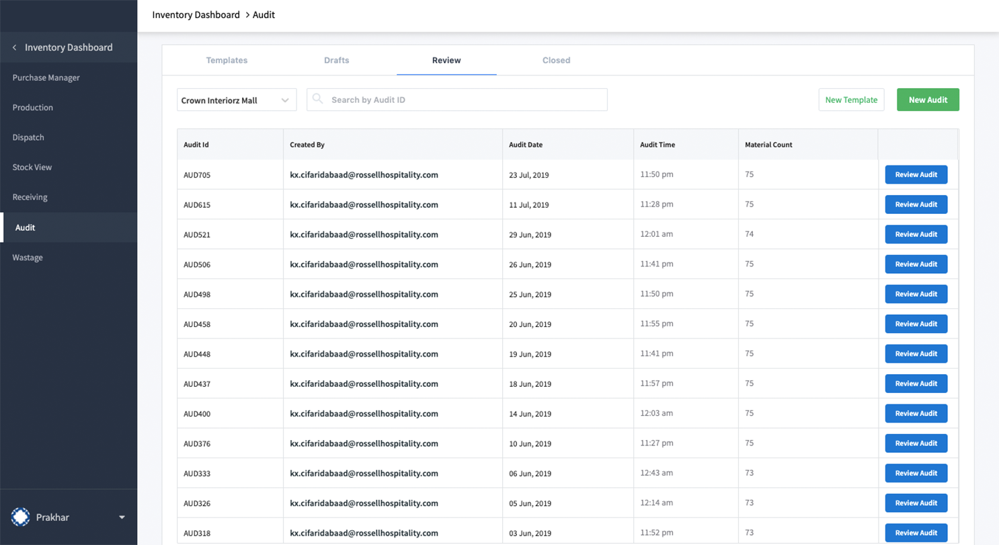

My Projects
Personal Portfolio
This Personal Portfolio website is a web-based platform designed to showcase my professional profile, skills, projects, achievements, and contact information. It serves as a digital resume and portfolio, providing a centralized and visually engaging representation of my work and expertise.

Food Inventory System
This Food Inventory System is a software application designed to manage, monitor, and control the stock of food items in various settings such as restaurants. The system ensures efficient tracking of inventory levels, expiration dates, and restocking needs, helping reduce waste and optimize supply chain operations.
